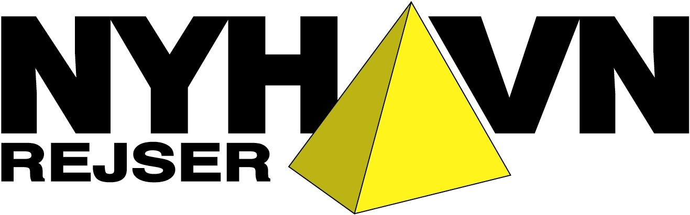
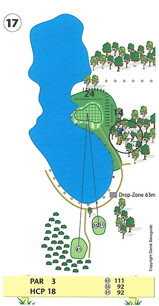
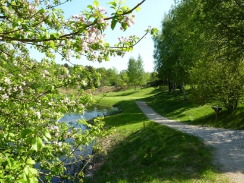

<div class="pages">
  <div data-page="hul17" class="page navbar-fixed toolbar-fixed" >
    <div class="navbar">
      <div class="navbar-inner">
        <div class="left">
          <a href="#" class="link back icon-only"><i class="icon icon-back"></i></a>
          <!-- <a href="#" class="back link icon-only"><i class="icon icon-back"></i></a> -->
        </div>
        <div class="center">Hul 17</div>
        <!-- <div class="right"></div> -->
        <div class="right">
        </div>
      </div>
    </div>
    <div class="page-content" style="padding-top:45px;">
       <div class="content-block">
          <p>Hole-in-one sponsor:<br />
          </p>
          <center></center>
          <p>17. hul er et af Danmarks smukkeste golfhuller. Nyd det, mens du er der.</p>
          <center></center>
          <p>Par 3 hullet er kun 112 meter fra gult tee, men der er ikke plads til mange fejltagelser. Tag grundigt bestik af vinden, vælg det rette jern og slå et højt slag, som vil sikre at bolden ikke ender i skråningen bag green. For korte udslag og udslag til venstre for green vil havne i søen.</p>
          <p>Det er valgfrit om du vil benytte golfreglerne til at droppe efter eller bruge drop-zonen. For lange udslag vil ende i skråningen bag green og give dig et vanskeligt chip mod green med søen lurende i baggrunden. Udslag til højre vil havne i den lille lund og givetvis give dig et udfordrende indspil til green.</p>
          <p>Green skråner fra højre mod venstre, som du bør tage højde for både i udslaget og når du putter.</p>
          <p>Til lav-handicapperen kan vi oplyse, at 17. hul er hullet, hvor der er scoret flest hole in ones's!</p>
          <p>Hulsponsor: <br />
          <br /><br />
          Bænksponsor:<br />
          </p>
        </div>
    </div>
    </div>
    </div>
  </div>
</div>
